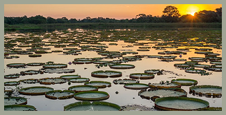
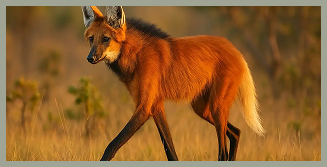
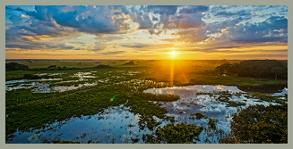
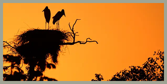

PANTANAL

Vegetação
A vegetação do Pantanal é bastante diversificada e muda conforme o nível da água, pois esse bioma passa por períodos de cheia e seca ao longo do ano. Em áreas mais altas, predominam gramíneas, arbustos e árvores típicas do cerrado. Nas regiões alagadas, crescem plantas aquáticas, como aguapés, e árvores adaptadas à umidade, como o ipê e a figueira.

Fauna
A fauna do Pantanal é uma das mais ricas do planeta. Ele abriga onças-pintadas, capivaras, jacarés, araras, tuiuiús, sucuris e uma infinidade de peixes, répteis, aves e mamíferos. A abundância de água e alimento durante as cheias favorece a reprodução e a convivência de várias espécies em um mesmo espaço.

Clima
O clima do Pantanal é tropical, com duas estações bem marcadas: uma chuvosa, geralmente entre outubro e março, e outra seca, de abril a setembro. Durante as cheias, boa parte da planície fica submersa, e, na seca, o solo volta a ficar exposto, o que causa mudanças significativas na paisagem e nos hábitos dos animais.

Importância Ecológica
O Pantanal tem grande importância ecológica por ser uma das maiores áreas alagáveis do mundo e um dos principais berçários naturais da vida silvestre. Ele ajuda a controlar enchentes, a purificar a água e a manter o equilíbrio dos rios da região. Além disso, é essencial para a conservação da biodiversidade e para atividades sustentáveis, como o ecoturismo e a pesca controlada.
